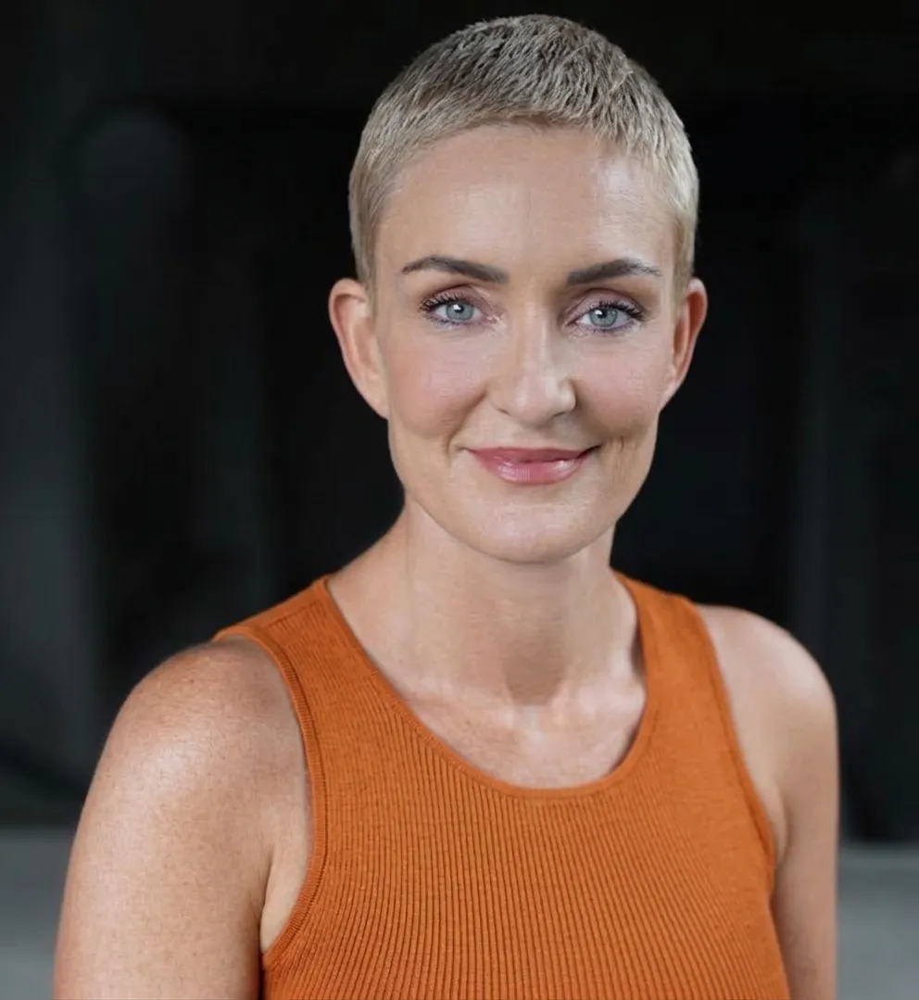

Authenticity
We build genuine connections through non-judgmental, open communication. Every interaction is grounded in personalised care, empathy, and trust — because real support starts with being real.
Our Story
Create Allied Health Services is a Sydney-based, NDIS-registered provider delivering person-centred allied health support across Australia. We were founded to fill a critical gap in clinical social work services for complex cases — situations where clients need more than standard support, and where deep clinical expertise makes the difference between a system that works for people and one that leaves them behind.
Our team brings together experienced, AASW-registered social workers who specialise in navigating complex systems on behalf of our clients. From hospital discharge planning to guardianship proceedings, from mental health crises to aged care transitions, we work alongside individuals, families, and care teams to deliver outcomes that are meaningful, sustainable, and deeply human.
Our Values
We build genuine connections through non-judgmental, open communication. Every interaction is grounded in personalised care, empathy, and trust — because real support starts with being real.
We seek to understand others deeply and address obstacles collaboratively. Our work is built on empathy, kindness, and respect for every person's unique journey and circumstances.
We embrace evolution and change, developing tailored solutions that deliver exceptional results. Our practice evolves with the evidence, ensuring our clients always receive the best possible care.

Meet the Founder
Founder & Clinical Director
With over 10 years of experience spanning acute mental health, child protection, aged care, homelessness, domestic violence, DVA, guardianship, and complex case coordination, Kate brings unparalleled clinical depth to every client engagement.
Kate's current PhD research examines social work roles in aged care settings, contributing to the evidence base that shapes how allied health professionals support older Australians in residential and community care.
Join Our Team
We're growing our team of passionate allied health professionals. Explore our open roles and become part of a practice built on collaboration and clinical excellence.
Join our multidisciplinary team delivering person-centred OT services across Sydney and beyond.
View Role →Support our operations with strong organisational and financial administration skills.
View Role →Provide trauma-informed counselling within a supportive, clinically supervised environment.
View Role →Whether you're a client seeking support, a professional looking for supervision, or an organisation wanting to partner — we'd love to hear from you.